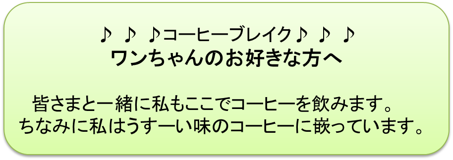

ゴンちゃんのモデルは私が若い頃に飼っていたシェパード犬です。弟のように可愛がっていました。
“一日10〜20ｋｍは運動が必要。そうでなければシェパード犬本来の姿にならない”
と信じていました。
下鴨の自宅をいざ出発！ 私達の散歩の始まりです。
鴨川沿いのゆったりとした下り坂を自転車をほぼ全力で走らせます。かなりのスピードとなります。
ゴンは、勿論、ギャロップ、ギャロップ、ギャロップの連続です。
10分〜15分後、京都御苑〔注〕に到着！
御苑の砂利道を自転車で一周します。途中広大な芝生でゴロンと寝ころんでの一休み。ゴンちゃんも一服です。
こんなときのゴンの表情は自信に満ちあふれ、なんとも得意そうです。何故でしょう？……考え抜いた私の結論は
“ご主人さまを散歩させてあげること、これがボクの大切な日課”
ではなかったのかな？ ということです。それほどに、いつも自信たっぷりの表情なのです。
帰り道は、下鴨神社の美しい参道を走り抜けて、自宅にゴールインというのが普通のコースです。勿論、雨降りの日も欠かしたことはありませんでした。
PART10を読んで下さった読者の方には、
“えっゴンちゃんの夕食は早め？ どうして？”
と訝る方がいらっしゃるかも知れませんね。
実は、私が飼っていたゴンの食事は一日一回切り、夕食だけでした。
“えっ！ それは可愛そう……”
と思われる方が多いでしょう。
ゴンを週三回訓練してくれていた調教師のKさんの
“成犬になれば夕食一回でOK。ただし、たっぷり上げて下さい”
とのアドバイスに従ったものでした。
近くのお店でうどん玉を6個、一番安いお肉をかなりの分量買ってきて、大鍋で、だしジャコと一緒に炊きこみます。味付けはお味噌をほんの少し加えると十分で、必要な塩分もこれでOK。
夕食は、実に大鍋たっぷりにいっぱいです。とにかく一日一回切りですから、一回分の量は“うわっ”と思うぐらいの量となります。
デザートは三大好物、サツマイモ、生節、おからのうちの一つですが、ゴンちゃんはサツマイモにいつも目を細めました最高の好物だったと思います。
ゴンちゃんが夢中になって、“ぱくっ”“ぱくっ”と、おいしそうに食事をしている真最中に、だしジャコやお肉がもっと満遍なく混ざるようにと考えて、お鍋に手を突っこんで、混ぜ直してあげることが、ときどきありました。
よく、人から
“食事の真最中に、いきなりお鍋に手を突っこんだりして大丈夫なの！？ 咬みつかれるのじゃないの？”
と言われたりしていました。
しかし……、心配ご無用！ 彼はこんなとき、直ぐお行儀よく座り直し、私が混ぜなおしている様子を得意のポーズ、首をかしげながらのポーズで眺めていました。
ゴンちゃんは私の手を100パーセント信頼していたのでしょう。
〔注〕：京都御苑、下鴨神社を私達京都市民、特に下鴨の人達は、御所(ごしょ)、糺森(ただすのもり)と呼んでいました。